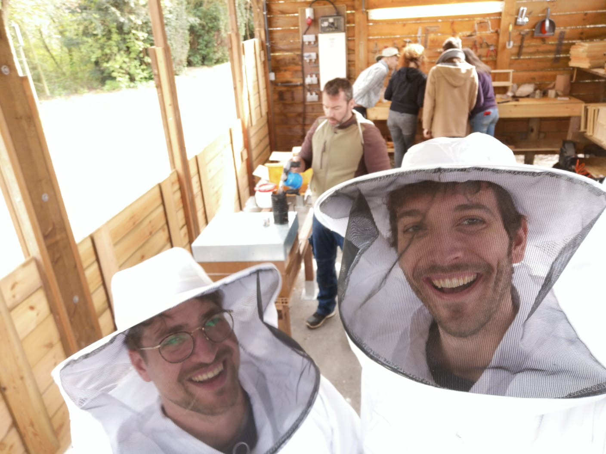
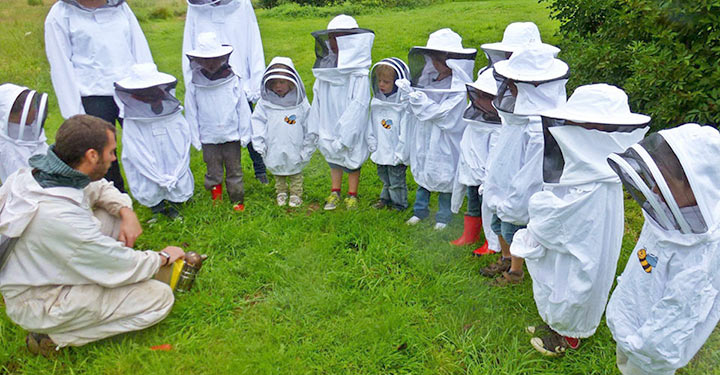
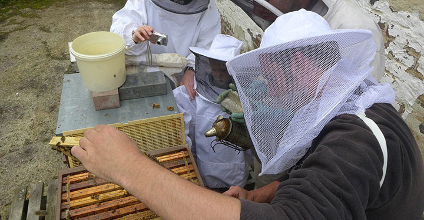

BIENVENUE
Terre@Air est une ASBL d’éducation à l’environnement, elle a pour but la protection de la nature et la création de lien entre l’être humain et la nature. Les différents objectifs de l’ASBL sont à chaque fois une porte d’entrée sur la compréhension de la nature. En effet il est autant possible de comprendre et respecter notre environnement en allant voir les abeilles qu’en s’interrogeant sur la vie du sol.... Partant du principe que : on respecte seulement ce que l’on connaît, les différents secteurs de l’ASBL ont tous pour objectifs de permettre aux humains qui y participent d’appréhender la globalité de la nature. L’éducation à l’environnement est un secteur neuf ! En effet, l’écologie et la protection de l’environnement sont des notions récentes dans l’histoire. De nos jours les sciences et technologies nous permettent de comprendre en profondeur les fonctionnements de la nature. Malheureusement, cette compréhension reste souvent accessible uniquement à une élite. Par la création d’animations adaptées, l’ASBL tente de rendre ce savoir accessible à tous. Jusqu’il y a peu, la transmission du savoir se faisait naturellement des aînés vers les plus jeunes. Actuellement, ce lien est brisé dans bien des cas et il est temps d’investir de l’énergie dans cette tâche oubliée afin de re-créer du lien entre l’homme et la nature. L’ASBL vise la transmission des enseignements nécessaire à la compréhension globale de la nature.
ANIMATIONS
L’ASBL Terre@Air vous propose des animations scolaires. L’animateur vient donc directement en classe avec du matériel adapté. Nous avons déjà constaté à de nombreuses reprises le changement d’attitude des enfants après une animation. Ayant pris conscience du rôle primordial de la nature dans notre vie, les enfants ont une réflexion plus poussée et changent leur comportement au quotidien. Ils vont par exemple, observer un insecte plutôt que de l’écraser, ils vont partager leurs nouvelles découvertes avec leur entourage etc.
PARAINAGE
Nous avons l’ambition de participer à la sauvegarde des abeilles et au développement des colonies en associant nos efforts à ceux des parrains. Parrainer une ruche c’est agir et s’engager en faveur de la sauvegarde des abeilles et de la biodiversité. Le concept est simple : les parrains soutiennent financièrement une ruche et l’apiculteur les tient informés de la vie de «leur» colonie. Dès lors les risques financiers sont partagés et des colonies nouvelles peuvent voir le jour. Il s’agit d’une réponse concrète à l’inquiétante disparition des insectes pollinisateurs. La récolte du miel est divisée entre parrains, abeilles et apiculteurs.
